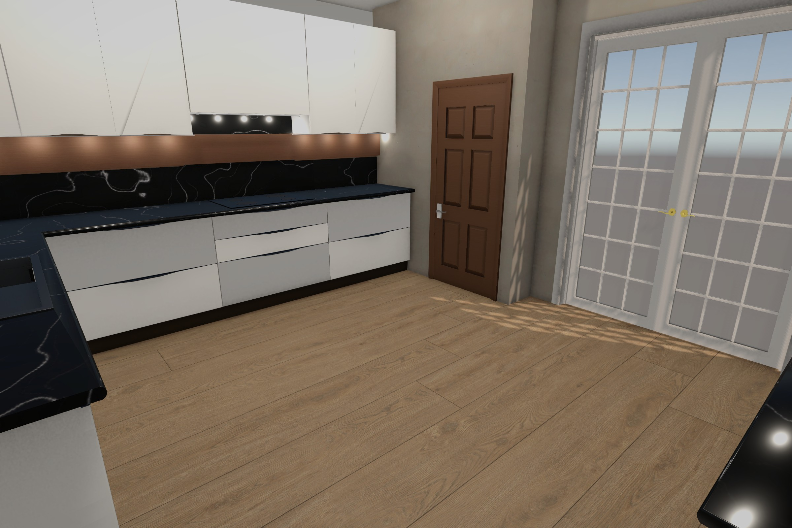
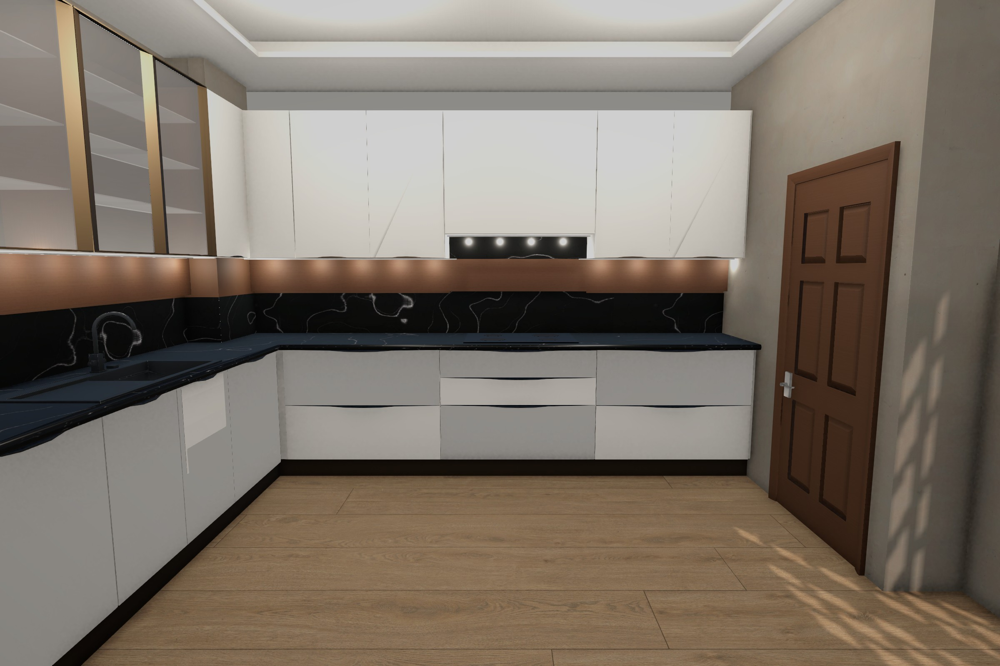
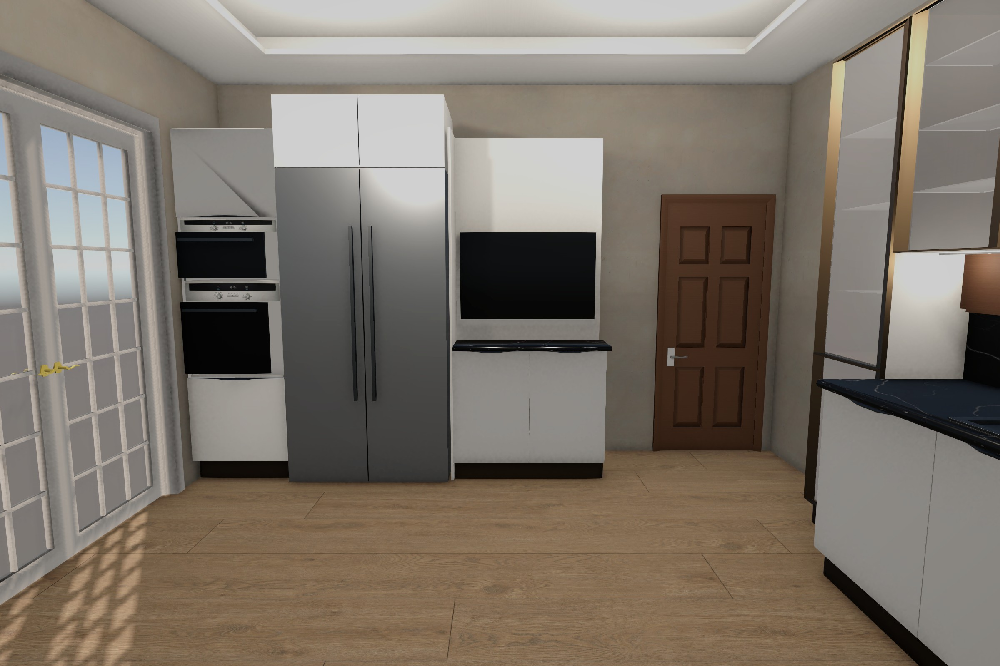
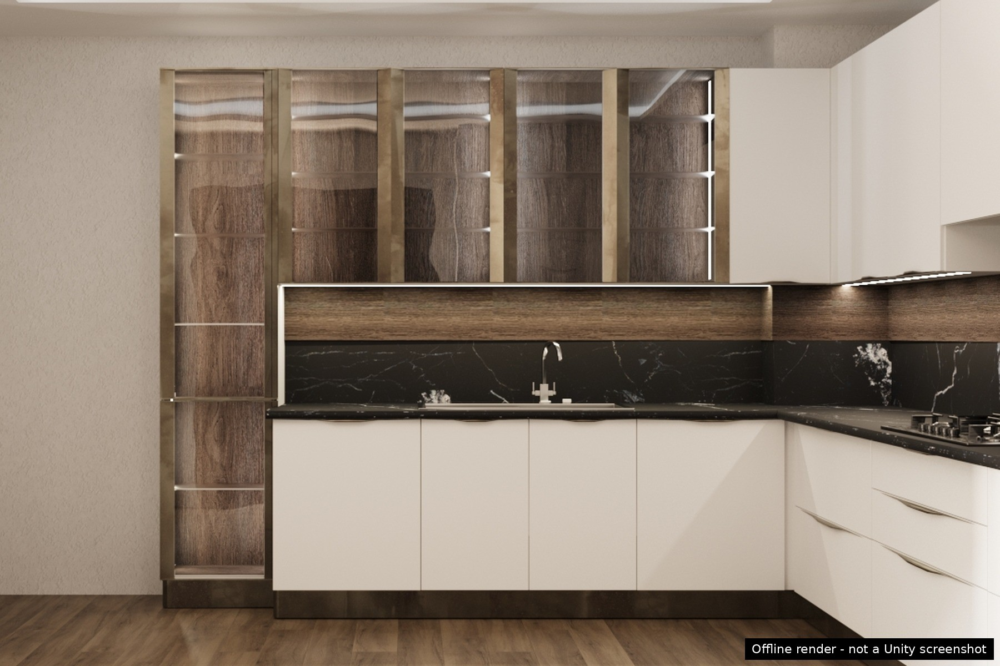

I design interiors and furniture for real spaces, and turn that experience into real-scale 3D environments and furniture packs for Unity creators.




Bachelor's degree in Interior Architecture and master's degree in Architecture (KTO Karatay University), with a thesis on AR-based furniture assembly guidance. Professional experience in kitchen design, bespoke furniture and museum exhibition interiors. Finalist award, 13th National Furniture Design Competition.